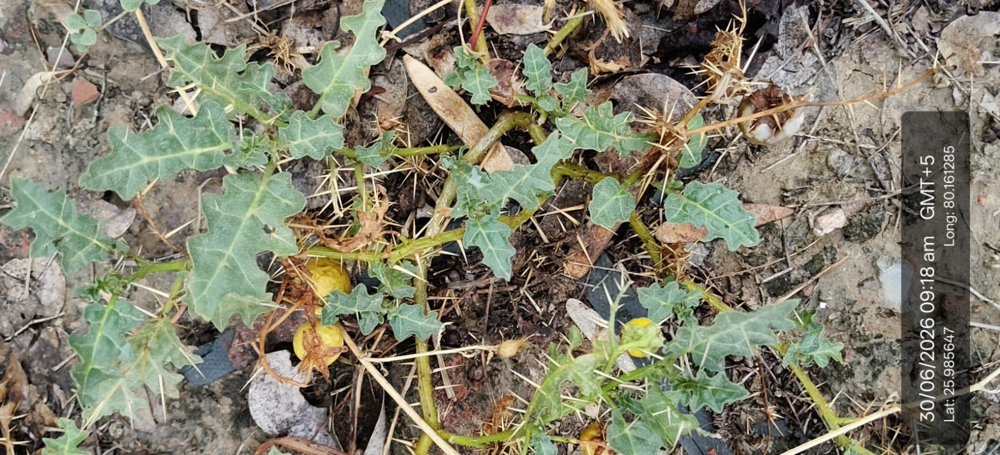

| Kingdom | Plantae |
|---|---|
| Family | Solanaceae |
| Genus | Solanum |
| Species | Solanum surattense |
| Scientific name | Solanum surattense |
| Category | Herbs |
Habitat & Growing Conditions
- Native to India and Southeast Asia. Common across India
- Very common in UP including Kanpur area in your coordinates. Found in wastelands, roadsides, crop fields, and dry open areas
- Thrives in tropical to subtropical climate. Grows best in monsoon and post-monsoon
- Needs full sun. Grows in poor, dry, sandy, and rocky soils. Highly drought tolerant
- Perennial herb that behaves like an annual. Flowers and fruits year-round, but peak in winter

Biodiversity Value
- Provides food for some birds.
- Deep roots help in soil binding
Economic & Ecological Importance
- Medicinal: Very important in Ayurveda. Entire plant used for cough, asthma, bronchitis, fever, and skin diseases. Fruits and roots are main parts used. Has anti-asthmatic and anti-inflammatory properties. Note: The plant contains toxic alkaloids. Consult a healthcare professional before any medicinal use. Do NOT self-medicate
- Agriculture: Considered a weed in crop fields, but also used as trap crop for nematodes
- Other: Fruits are not edible for humans due to toxicity. Sometimes used as fish poison in villages
Medicinal Importance
- Whole plant is very important in Ayurveda, used for cough, asthma and bronchitis; fruits and roots are the main parts used.
Authentic Ayurvedic Reference
- Classical Ayurvedic name is Kantakari; the whole plant is one of the ten roots of the classical Dashamoola group, documented for respiratory conditions.
Field Notes
- Synonym: Solanum xanthocarpum
Visual record